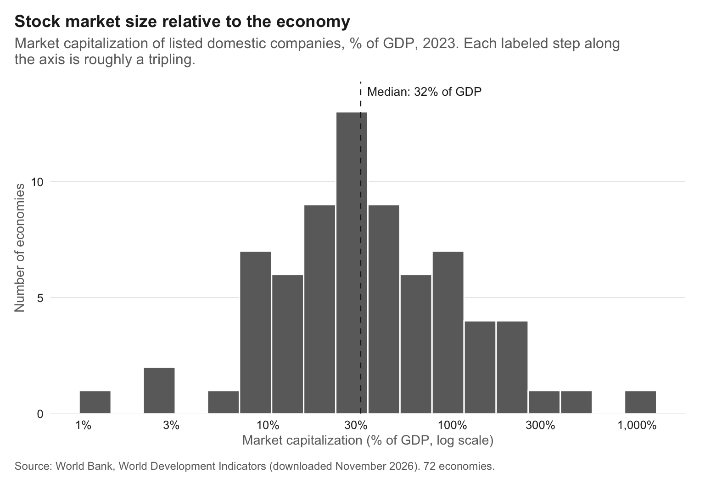
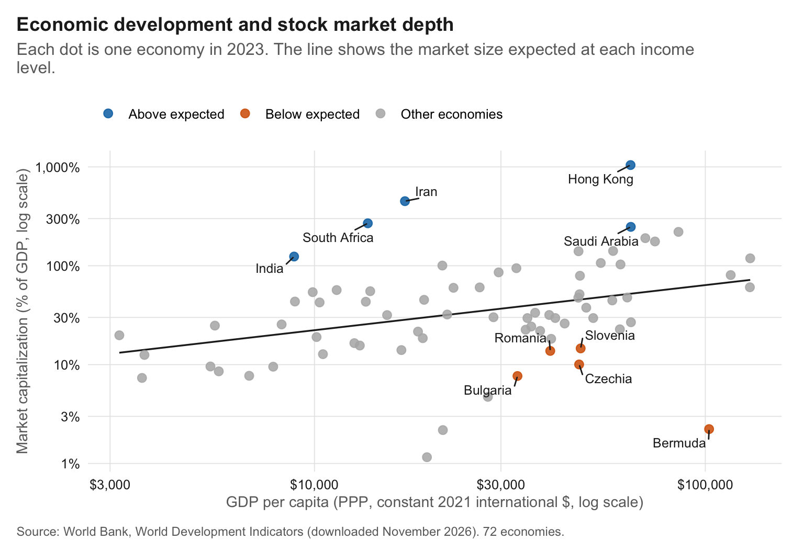
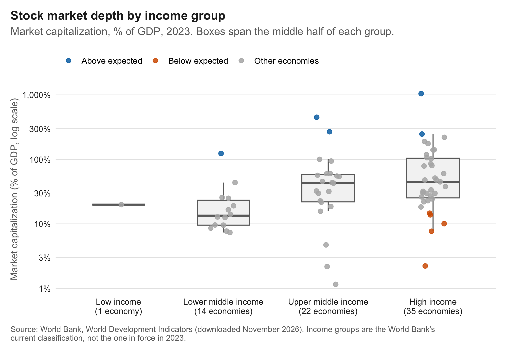
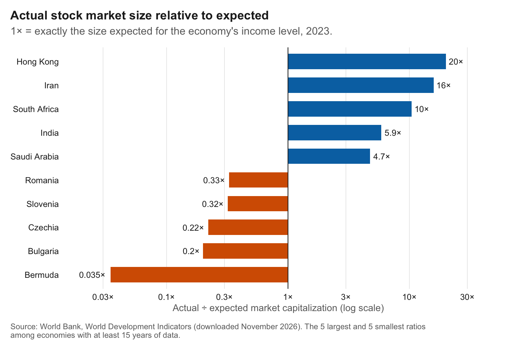
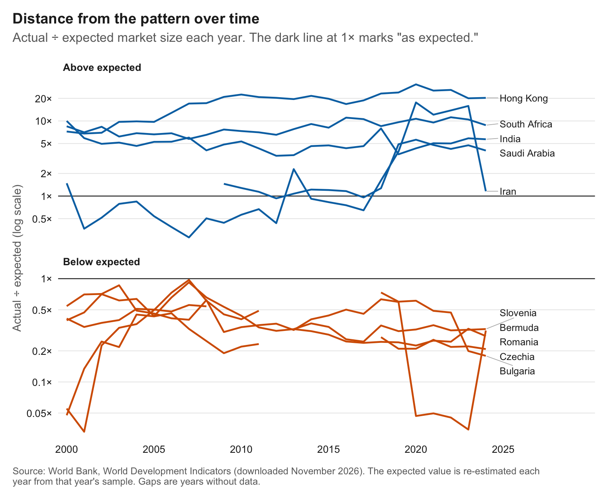
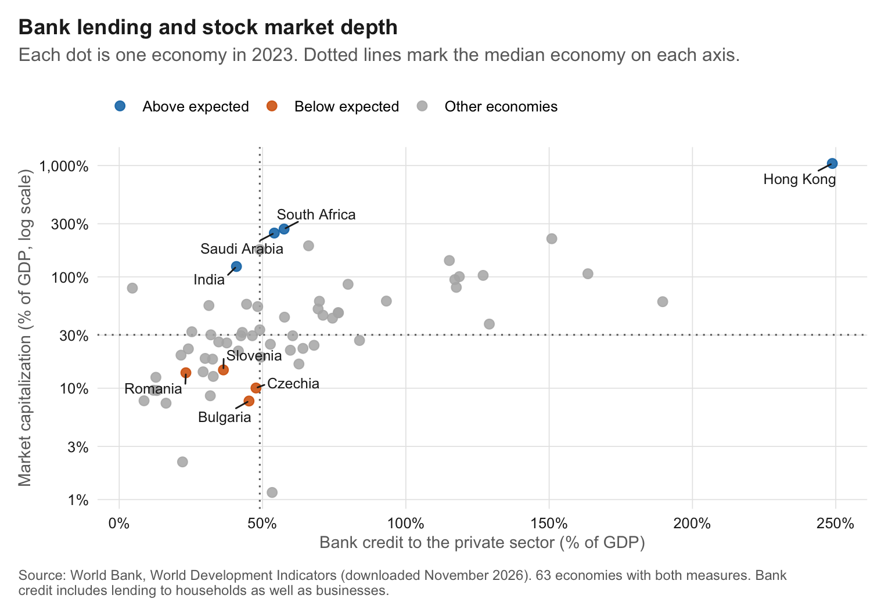
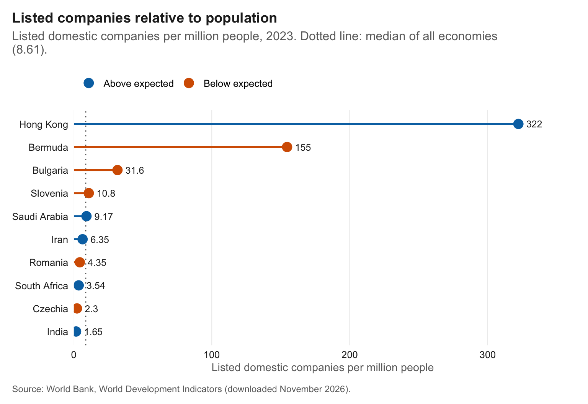
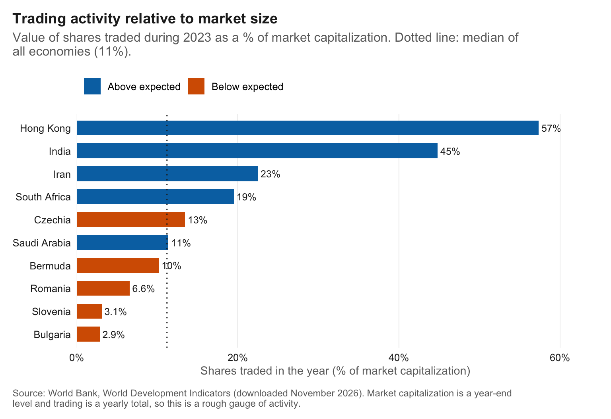
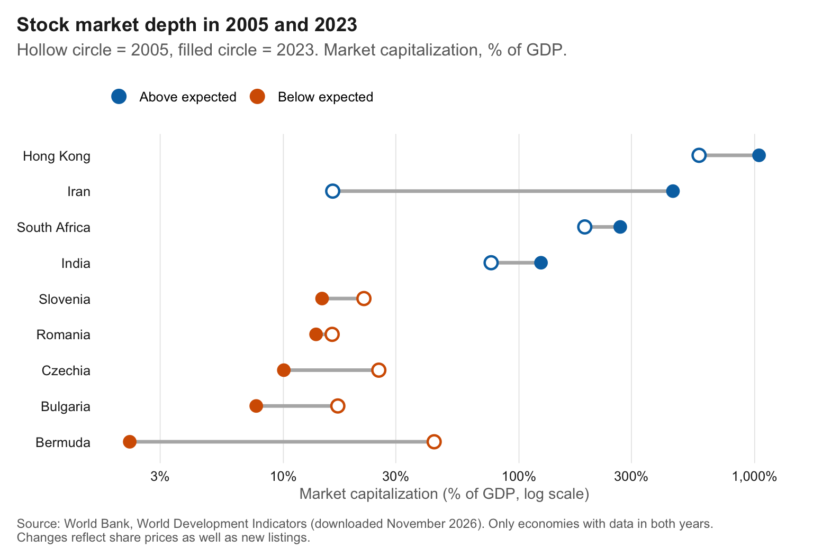
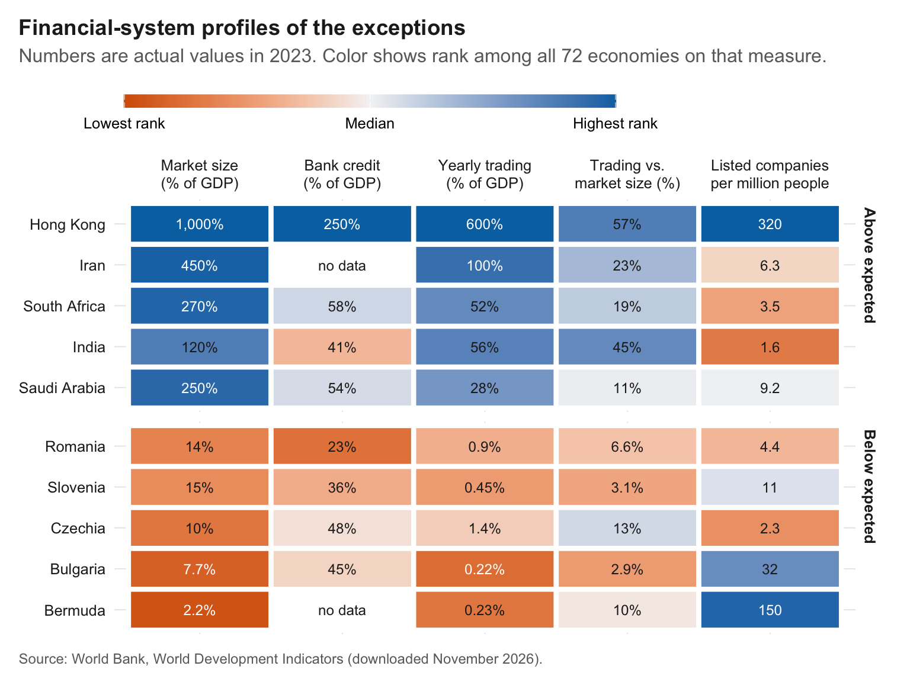

Exploring the Relationship Between Economic Development and Public Equity Market Depth
Author
Arman Dashti
Introduction
A country’s stock market is often treated as a scoreboard for its economy. If that were accurate, economies at similar income levels would have stock markets of similar size. In 2023, the companies listed in Hong Kong were worth roughly ten times the territory’s annual economic output. In Czechia, also a high-income economy, they were worth about a tenth of it.
This project asks why economies with comparable levels of economic development have such different public stock markets. The main measure is market capitalization as a percentage of GDP: the combined value of all domestic companies listed on an economy’s stock exchange, divided by the value of everything that economy produces in a year. A higher number means a deeper stock market relative to the size of the economy.
The project has four parts. Part 1 establishes the general pattern between income and stock market depth. Part 2 identifies the economies that sit furthest from that pattern. Part 3 looks at bank lending, the number of listed companies, and trading activity for clues about what sets those economies apart. Part 4 brings the evidence together. This is an exploratory look at World Bank data. It describes patterns and does not claim to prove what causes them.
Data and method
Source. World Bank, World Development Indicators, retrieved with the WDI R package and saved locally so the page does not depend on a live connection. The download and cleaning scripts are in pages/project/src/data/.
Sample. Individual economies only. World Bank groupings such as “World” or “High income” are removed. Only economies whose stock exchange data reaches the World Bank appear here, so an economy missing from a chart has no data. That is different from having no stock market.
Reference year. 2023, the most recent year in which the number of economies with data is close to its peak (72 economies).
Expected market size. A straight line fitted to market capitalization (% of GDP) against GDP per capita, with both on logarithmic scales, estimated separately for each year. Each economy’s ratio is its actual market size divided by the size the line predicts for its income. A ratio of 2× means twice as deep as expected. The line is a yardstick for comparison. It makes no causal claim, and “below expected” does not mean a worse financial system.
Exceptions. The 5 highest and 5 lowest ratios in 2023, among economies with at least 15 years of data. The rule was set before looking at which economies it would pick.
Part 1: The global pattern
1. How deep are stock markets around the world?
Show the code
median_market_cap <-median(reference_data$market_cap_gdp)plot_distribution <-ggplot(reference_data, aes(x = market_cap_gdp)) +geom_histogram(bins =18, fill = project_colors[["muted"]], color ="white") +geom_vline(xintercept = median_market_cap,linetype ="dashed", color = project_colors[["ink"]] ) +annotate("text",x = median_market_cap, y =Inf,label =paste0(" Median: ", round(median_market_cap), "% of GDP"),hjust =0, vjust =1.6, size =3.5, color = project_colors[["ink"]] ) +scale_x_log10(breaks = pct_breaks, labels = label_pct) +scale_y_continuous(expand =expansion(mult =c(0, 0.1))) +labs(title ="Stock market size relative to the economy",subtitle =wrap_text(paste0("Market capitalization of listed domestic companies, % of GDP, ", reference_year,". Each labeled step along the axis is roughly a tripling." ), width =92),x ="Market capitalization (% of GDP, log scale)",y ="Number of economies",caption =wrap_text(paste0(source_note, " ", n_reference, " economies.")) ) +theme(panel.grid.major.x =element_blank())show_and_save(plot_distribution, "01-distribution")

Each bar counts the economies whose stock market falls in a given size range. The typical economy has a stock market worth about a third of its annual output (the median is 32% of GDP), and roughly two-thirds of the 72 economies fall between 10% and 100%. The extremes are far apart. The smallest markets are worth about 1% of GDP and the largest about 1,000%, a thousand-fold difference. The axis uses a log scale so that both ends are visible, which means each labeled step is roughly a tripling. Values above 100% are possible because market capitalization is the total value investors place on companies, which reflects many years of expected profits, while GDP counts a single year of output.
2. Do richer economies have deeper stock markets?
Show the code
plot_development <-ggplot(reference_data, aes(x = gdp_per_capita, y = market_cap_gdp)) +geom_smooth(method ="lm", formula = y ~ x, se =FALSE,color = project_colors[["ink"]], linewidth =0.6 ) +geom_point(aes(color = pattern_group), size =2.6, alpha =0.85) +geom_text_repel(data = selected_reference,aes(label = economy),color = project_colors[["ink"]], size =3.3,min.segment.length =0, box.padding =0.4, seed =167 ) +scale_x_log10(breaks =c(1000, 3000, 10000, 30000, 100000),labels = scales::label_dollar(accuracy =1) ) +scale_y_log10(breaks = pct_breaks, labels = label_pct) +scale_color_manual(values = group_colors) +labs(title ="Economic development and stock market depth",subtitle =wrap_text(paste0("Each dot is one economy in ", reference_year,". The line shows the market size expected at each income level." ), width =92),x ="GDP per capita (PPP, constant 2021 international $, log scale)",y ="Market capitalization (% of GDP, log scale)",caption =wrap_text(paste0(source_note, " ", n_reference, " economies.")) )show_and_save(plot_development, "02-development-scatter")

Each dot is an economy, placed by its income per person (left to right) and its stock market depth (bottom to top). The line slopes upward, so richer economies do tend to have deeper stock markets. An economy that is ten times richer is expected to have a market about three times deeper relative to its GDP. The pattern is loose, though. Among economies with incomes between roughly $45,000 and $65,000 per person, market depth runs from about 10% of GDP in Czechia to about 1,000% in Hong Kong. The colored dots are the ten exceptions examined in the rest of the project: blue for markets much larger than the line predicts, orange for markets much smaller.
Show the code
# How strong is the pattern, and does one extreme market drive it?baseline_check <-function(data, sample_label) { fit <-lm(log10(market_cap_gdp) ~log10(gdp_per_capita), data = data)tibble(Sample = sample_label,Economies =nrow(data),Slope =round(coef(fit)[[2]], 2),`R squared`=round(summary(fit)$r.squared, 2) )}largest_market <- reference_data |>slice_max(market_cap_gdp, n =1, with_ties =FALSE)bind_rows(baseline_check(reference_data, "All economies"),baseline_check(filter(reference_data, iso3c != largest_market$iso3c),paste("Excluding", largest_market$economy) )) |> knitr::kable()
Sample
Economies
Slope
R squared
All economies
72
0.46
0.12
Excluding Hong Kong
71
0.41
0.10
Income level accounts for only about 12% of the differences in market depth across economies (an R squared of 0.12), which leaves most of the variation unexplained. Removing Hong Kong, the largest market, barely changes the result, so the weak pattern is not the product of one extreme case.
3. Market depth within each income group
Show the code
income_data <- reference_data |>filter(!is.na(income_group)) |>group_by(income_group) |>mutate(income_label =paste0( income_group, "\n(", n(), if_else(n() ==1, " economy)", " economies)") ) ) |>ungroup() |>mutate(income_label =reorder(income_label, as.integer(income_group)))plot_income <-ggplot(income_data, aes(x = income_label, y = market_cap_gdp)) +geom_boxplot(outlier.shape =NA, width =0.5,color = project_colors[["muted"]], fill ="#F4F4F4" ) +geom_point(aes(color = pattern_group),position =position_jitter(width =0.12, height =0, seed =167),size =2.2, alpha =0.85 ) +scale_y_log10(breaks = pct_breaks, labels = label_pct) +scale_color_manual(values = group_colors) +labs(title ="Stock market depth by income group",subtitle =wrap_text(paste0("Market capitalization, % of GDP, ", reference_year,". Boxes span the middle half of each group." ), width =92),x =NULL,y ="Market capitalization (% of GDP, log scale)",caption =wrap_text(paste0( source_note," Income groups are the World Bank's current classification, not the one in force in ", reference_year, "." )) ) +theme(panel.grid.major.x =element_blank())show_and_save(plot_income, "03-income-boxplot")

This chart groups economies by the World Bank’s income classification. Each box covers the middle half of its group, the line inside the box is the median, and each dot is one economy. The typical lower-middle-income economy has a stock market worth about 13% of GDP, compared with a little over 40% for both upper-middle and high-income economies. The step up happens between the lower-middle and upper-middle groups, and the two richest groups look alike at the median. The spread inside each group is much larger than the gaps between groups. High-income economies alone range from about 2% of GDP to more than 1,000%. All five below-expected economies (orange) are high income, while the above-expected economies (blue) appear in three different income groups. Only one low-income economy has data, so that group cannot be compared.
Part 2: The exceptions
4. Which economies sit furthest from the pattern?
Show the code
plot_exceptions <- selected_reference |>mutate(economy =reorder(economy, market_cap_residual_log)) |>ggplot(aes(x = market_cap_residual_log, y = economy, fill = pattern_group)) +geom_col(width =0.65) +geom_vline(xintercept =0, color = project_colors[["ink"]], linewidth =0.4) +geom_text(aes(label =label_times(market_cap_ratio),hjust =if_else(market_cap_residual_log >0, -0.2, 1.2) ),size =3.4, color = project_colors[["ink"]] ) +scale_x_continuous(breaks =log10(ratio_breaks_wide),labels =label_times(ratio_breaks_wide),expand =expansion(mult =0.14) ) +scale_fill_manual(values = group_colors, guide ="none") +labs(title ="Actual stock market size relative to expected",subtitle =wrap_text(paste0("1× = exactly the size expected for the economy's income level, ", reference_year, "." ), width =92),x ="Actual ÷ expected market capitalization (log scale)",y =NULL,caption =wrap_text(paste0( source_note, " The ", n_each_side, " largest and ", n_each_side," smallest ratios among economies with at least ", min_years_of_data, " years of data." )) ) +theme(panel.grid.major.y =element_blank())show_and_save(plot_exceptions, "04-exceptions-bar")

The bars show how many times larger or smaller each stock market is than the size expected for its income level. Hong Kong’s market is about 20 times the expected size, Iran’s 16 times, South Africa’s 10 times, India’s about 6 times, and Saudi Arabia’s about 5 times. On the other side, the markets of Romania and Slovenia are about a third of the expected size, those of Czechia and Bulgaria about a fifth, and Bermuda’s about one-thirtieth.
The two sides look different. The above-expected group is spread across East Asia, the Middle East, Africa, and South Asia, and nothing obvious ties it together. Four of the five below-expected economies are Central and Eastern European members of the European Union. The fifth, Bermuda, is a small island economy with very high income per person. Two economies with even smaller markets appear as gray dots near the bottom of chart 2. They are left out here because they have fewer than 15 years of data.
5. Are the exceptions persistent or recent?
Show the code
selected_history <- world_bank |>filter(pattern_group !="Other economies")line_labels <- selected_history |>filter(!is.na(market_cap_ratio)) |>group_by(economy) |>slice_max(year, n =1, with_ties =FALSE) |>ungroup()plot_persistence <-ggplot( selected_history,aes(x = year, y = market_cap_ratio, group = economy, color = pattern_group)) +geom_hline(yintercept =1, color = project_colors[["ink"]], linewidth =0.4) +geom_line(linewidth =0.8, na.rm =TRUE) +geom_text_repel(data = line_labels,aes(label = economy),color = project_colors[["ink"]], size =3.2,direction ="y", hjust =0, nudge_x =0.8,segment.color = project_colors[["other"]], segment.size =0.3, seed =167 ) +facet_wrap(~ pattern_group, ncol =1, scales ="free_y") +scale_x_continuous(breaks =seq(2000, 2025, 5),expand =expansion(mult =c(0.02, 0.22)) ) +scale_y_log10(breaks = ratio_breaks, labels = label_times) +scale_color_manual(values = group_colors, guide ="none") +labs(title ="Distance from the pattern over time",subtitle =wrap_text("Actual ÷ expected market size each year. The dark line at 1× marks \"as expected.\"",width =92 ),x =NULL,y ="Actual ÷ expected (log scale)",caption =wrap_text(paste0( source_note," The expected value is re-estimated each year from that year's sample. Gaps are years without data." )) ) +theme(panel.grid.major.x =element_blank())show_and_save(plot_persistence, "05-persistence-lines", height =6.5)

These lines track the same ratio, actual market size divided by expected size, for each exception since 2000. The dark line at 1× means “exactly as expected.”
Three of the above-expected economies have been there the whole time. Hong Kong, South Africa, and India have stayed several times above the expected size for more than two decades. The other two arrived recently. Saudi Arabia was close to or below the expected size until 2019, when its ratio jumped to about 5×. The timing matches the stock market listing of the state oil company Saudi Aramco in December 2019. Iran’s ratio climbed from about 1× in 2017 to more than 15× by 2020, stayed above 10× through 2023, and fell back to about 1× in 2024. A rise and fall that large is hard to read as a real change in a stock market. One possible cause is measurement, since Iran has had high inflation and more than one exchange rate, both of which can distort a ratio like this one. I treat Iran with caution for the rest of the project.
Below the line, the four European economies came closest to the expected size around 2007, just before the global financial crisis, and have stayed well below it since, mostly between 0.2× and 0.6×. Bermuda is different. Its ratio drops sharply from 2020 to 2023 and recovers in 2024, which suggests that its extreme position in 2023 partly reflects an irregularity in the data.
Part 3: The financial systems behind the differences
6. Stock markets and bank lending
Show the code
bank_data <- reference_data |>filter(!is.na(bank_credit_gdp))plot_bank <-ggplot(bank_data, aes(x = bank_credit_gdp, y = market_cap_gdp)) +geom_vline(xintercept =median(bank_data$bank_credit_gdp),linetype ="dotted", color = project_colors[["muted"]] ) +geom_hline(yintercept =median(bank_data$market_cap_gdp),linetype ="dotted", color = project_colors[["muted"]] ) +geom_point(aes(color = pattern_group), size =2.6, alpha =0.85) +geom_text_repel(data =filter(bank_data, pattern_group !="Other economies"),aes(label = economy),color = project_colors[["ink"]], size =3.3,min.segment.length =0, box.padding =0.4, seed =167 ) +scale_x_continuous(labels = label_pct) +scale_y_log10(breaks = pct_breaks, labels = label_pct) +scale_color_manual(values = group_colors) +labs(title ="Bank lending and stock market depth",subtitle =wrap_text(paste0("Each dot is one economy in ", reference_year,". Dotted lines mark the median economy on each axis." ), width =92),x ="Bank credit to the private sector (% of GDP)",y ="Market capitalization (% of GDP, log scale)",caption =wrap_text(paste0( source_note, " ", nrow(bank_data), " economies with both measures. ","Bank credit includes lending to households as well as businesses." )) )show_and_save(plot_bank, "06-bank-scatter")

This chart compares each economy’s stock market with the amount its banks lend to households and businesses. A common idea is that economies rely on either banks or stock markets. If that were true here, economies with small stock markets would have large banking systems. The chart shows the opposite tendency. The dots rise from the lower left to the upper right, and every economy with bank credit above 100% of GDP also has a stock market larger than the median.
The exceptions fit this reading. Romania, Slovenia, Czechia, and Bulgaria all have bank credit at or below the median, so their small stock markets are not offset by large banking systems. South Africa, Saudi Arabia, and India have bank credit close to the median but much larger stock markets than economies with similar lending. Hong Kong is at the top on both measures. Iran and Bermuda are missing because the World Bank has no bank credit figure for them in 2023.
7. How many companies are listed?
Show the code
breadth_data <- selected_reference |>filter(!is.na(listed_per_million)) |>mutate(economy =reorder(economy, listed_per_million))median_listed <-median(reference_data$listed_per_million, na.rm =TRUE)plot_breadth <-ggplot( breadth_data,aes(x = listed_per_million, y = economy, color = pattern_group)) +geom_vline(xintercept = median_listed,linetype ="dotted", color = project_colors[["muted"]] ) +geom_segment(aes(x =0, xend = listed_per_million, yend = economy),linewidth =0.9, show.legend =FALSE ) +geom_point(size =4) +geom_text(aes(label =paste0(" ", label_value(listed_per_million))),hjust =0, size =3.3, color = project_colors[["ink"]] ) +scale_x_continuous(expand =expansion(mult =c(0, 0.12))) +scale_color_manual(values = group_colors) +labs(title ="Listed companies relative to population",subtitle =wrap_text(paste0("Listed domestic companies per million people, ", reference_year,". Dotted line: median of all economies (", label_value(median_listed), ")." ), width =92),x ="Listed domestic companies per million people",y =NULL,caption =wrap_text(source_note) ) +theme(panel.grid.major.y =element_blank())show_and_save(plot_breadth, "07-breadth-lollipop")

This chart counts listed companies per million residents to see whether a large stock market also means many listed companies. It does not. India has thousands of listed companies, but across 1.4 billion people that comes to only 1.65 per million, the lowest of the ten. South Africa is also well below the median of 8.6. Both have stock markets far larger than expected, so their size comes from the value of the companies and not from how many there are.
The reverse also happens. Bulgaria has about 32 listed companies per million people, almost four times the median, and one of the smallest markets in the sample, which points to many very small listings. Hong Kong is the only economy that is high on both size and breadth. Bermuda’s figure is inflated by its very small population: 155 per million works out to only about ten companies.
8. How actively are the markets traded?
Show the code
trading_data <- selected_reference |>filter(!is.na(trading_to_market_cap)) |>mutate(economy =reorder(economy, trading_to_market_cap))median_trading <-median(reference_data$trading_to_market_cap, na.rm =TRUE)plot_trading <-ggplot( trading_data,aes(x = trading_to_market_cap, y = economy, fill = pattern_group)) +geom_col(width =0.65) +geom_vline(xintercept = median_trading,linetype ="dotted", color = project_colors[["ink"]] ) +geom_text(aes(label =paste0(" ", label_pct(signif(trading_to_market_cap, 2)))),hjust =0, size =3.3, color = project_colors[["ink"]] ) +scale_x_continuous(labels = label_pct, expand =expansion(mult =c(0, 0.12))) +scale_fill_manual(values = group_colors) +labs(title ="Trading activity relative to market size",subtitle =wrap_text(paste0("Value of shares traded during ", reference_year," as a % of market capitalization. Dotted line: median of all economies (",label_pct(signif(median_trading, 2)), ")." ), width =92),x ="Shares traded in the year (% of market capitalization)",y =NULL,caption =wrap_text(paste0( source_note," Market capitalization is a year-end level and trading is a yearly total, so this is a rough gauge of activity." )) ) +theme(panel.grid.major.y =element_blank())show_and_save(plot_trading, "08-trading-bar")

Size and activity are different things. This chart shows the value of shares traded during 2023 as a percentage of each market’s total value, a rough gauge of how actively a market is used. Hong Kong (57%) and India (45%) are large and heavily traded. Saudi Arabia stands out for the opposite reason. Its market is nearly five times the expected size, but trading is only 11% of its value, right at the median for all economies. That fits a market whose value is concentrated in a company that is mostly owned by the state, because shares held by a government rarely change hands.
The below-expected markets are mostly quiet as well as small. In Slovenia and Bulgaria, only about 3% of the market’s value traded during the year. Czechia is the one member of that group above the median.
Part 4: Putting the differences together
9. Then and now
Show the code
change_data <- world_bank |>filter( pattern_group !="Other economies", year %in%c(comparison_year, reference_year) ) |>mutate(period =if_else(year == comparison_year, "start_value", "end_value")) |>select(economy, pattern_group, period, market_cap_gdp) |>pivot_wider(names_from = period, values_from = market_cap_gdp) |>filter(!is.na(start_value), !is.na(end_value), start_value >0, end_value >0) |>mutate(economy =reorder(economy, end_value))plot_change <-ggplot(change_data, aes(y = economy, color = pattern_group)) +geom_segment(aes(x = start_value, xend = end_value, yend = economy),color = project_colors[["other"]], linewidth =1.2 ) +geom_point(aes(x = start_value), shape =21, fill ="white", size =3.5, stroke =1.2) +geom_point(aes(x = end_value), size =3.8) +scale_x_log10(breaks = pct_breaks, labels = label_pct) +scale_color_manual(values = group_colors) +labs(title =paste0("Stock market depth in ", comparison_year, " and ", reference_year),subtitle =wrap_text(paste0("Hollow circle = ", comparison_year, ", filled circle = ", reference_year,". Market capitalization, % of GDP." ), width =92),x ="Market capitalization (% of GDP, log scale)",y =NULL,caption =wrap_text(paste0( source_note, " Only economies with data in both years. ","Changes reflect share prices as well as new listings." )) ) +theme(panel.grid.major.y =element_blank())show_and_save(plot_change, "09-change-dumbbell")

The hollow circle is each economy’s stock market depth in 2005 and the filled circle is its depth in 2023. Every above-expected economy moved to the right. Hong Kong, South Africa, and India all deepened, and Iran shows the largest increase, with the caution noted earlier. Every below-expected economy moved to the left. The four European economies went from roughly 16% to 25% of GDP in 2005 to roughly 8% to 15% in 2023, and Bermuda fell the furthest.
The two groups have moved apart over eighteen years. The exceptions are not converging toward the general pattern. Part of the change reflects share prices, because a rising stock market raises this measure even when no company sells new shares. Saudi Arabia is absent because it has no figure for 2005.
10. Financial-system profiles of the exceptions
Show the code
indicator_labels <-c(market_cap_gdp ="Market size\n(% of GDP)",bank_credit_gdp ="Bank credit\n(% of GDP)",stocks_traded_gdp ="Yearly trading\n(% of GDP)",trading_to_market_cap ="Trading vs.\nmarket size (%)",listed_per_million ="Listed companies\nper million people")profile_data <- reference_data |>select(economy, pattern_group, market_cap_ratio, all_of(names(indicator_labels))) |>pivot_longer(cols =all_of(names(indicator_labels)),names_to ="indicator",values_to ="value" ) |># Rank every economy on each measure (0 = lowest, 100 = highest) BEFORE# narrowing to the exceptions, so color compares them with the full sample.group_by(indicator) |>mutate(percentile =percent_rank(value) *100) |>ungroup() |>filter(pattern_group !="Other economies") |>mutate(indicator_label =factor(unname(indicator_labels[indicator]),levels =unname(indicator_labels) ),economy =reorder(economy, market_cap_ratio),value_label =case_when(is.na(value) ~"no data", indicator =="listed_per_million"~label_value(value, digits =2),TRUE~label_pct(signif(value, 2)) ),text_color =if_else(!is.na(percentile) &abs(percentile -50) >38,"white", project_colors[["ink"]] ) )plot_profile <-ggplot(profile_data, aes(x = indicator_label, y = economy, fill = percentile)) +geom_tile(color ="white", linewidth =1.5) +geom_text(aes(label = value_label, color = text_color), size =3.2) +facet_grid(pattern_group ~ ., scales ="free_y", space ="free_y") +scale_x_discrete(position ="top") +scale_color_identity() +scale_fill_gradient2(low = project_colors[["below"]], mid ="#F4F4F4", high = project_colors[["above"]],midpoint =50, limits =c(0, 100), na.value ="white",breaks =c(0, 50, 100), labels =c("Lowest rank", "Median", "Highest rank"),name =NULL ) +labs(title ="Financial-system profiles of the exceptions",subtitle =wrap_text(paste0("Numbers are actual values in ", reference_year,". Color shows rank among all ", n_reference, " economies on that measure." ), width =92),x =NULL,y =NULL,caption =wrap_text(source_note) ) +theme(panel.grid =element_blank(),legend.key.width =unit(2.2, "cm"),legend.key.height =unit(0.3, "cm"),axis.text.x =element_text(lineheight =0.95) )show_and_save(plot_profile, "10-profile-heatmap", height =6)

This chart puts five measures side by side for the ten exceptions. The number in each cell is the actual value, and the color shows where that value ranks among all 72 economies. Blue is above the median and orange is below.
Two columns separate the groups cleanly. Market size does so by design, and yearly trading follows it: every above-expected economy is above the median on trading, and every below-expected economy is below it. Two columns do not separate the groups. Bank credit is close to the median for most economies on both sides, apart from Hong Kong at the top and Romania near the bottom. Listed companies per person runs against expectations, with India, South Africa, and Iran below the median and Bulgaria and Bermuda above it. Hong Kong is the only economy that is blue across its entire row. Cells marked “no data” are missing values, not zeros.
Discussion
Do economies at the same level of development have similar stock markets? In this data they do not. Richer economies tend to have deeper stock markets, but income per person accounts for only about 12% of the differences across the 72 economies with data. Most of what makes one stock market large and another small has to do with something other than how rich the economy is.
The economies above the pattern got there in different ways. Hong Kong is a financial center that leads on every measure and whose exchange serves companies from well beyond its own small economy. South Africa and India have been far above the pattern for more than twenty years with ordinary levels of bank lending and few listed companies per person, which points to long-established markets built around large companies. Saudi Arabia’s position dates from a single event, the 2019 listing of Saudi Aramco, and its low trading suggests a market that is larger on paper than in daily use. Iran’s swings are too abrupt to take at face value. The same headline number describes four or five different situations.
The economies below the pattern are more alike. Four of the five are Central and Eastern European members of the European Union, all of which re-established their stock exchanges around 1990 or later. Their stock markets are small, thinly traded, and have shrunk relative to their economies since 2005. Their banking systems are not unusually large, so the idea that banks fill the gap left by a small stock market does not hold for them here. Across all economies, bank lending and stock market size tend to rise together. Bermuda’s position rests on four unusual years of data and should not be over-read.
This project cannot say why these differences exist. A small stock market is not a sign of a weaker financial system, because companies can also be financed by banks, private investors, or foreign parent companies, and none of those appear in this measure. What the data does show is that market capitalization relative to GDP is often quoted as if it measured one thing, when it can describe very different financial systems. For me, the exceptions turned out to be more informative than the average.
Data notes and limitations
Missing values are left missing and are never treated as zero. The number of economies differs from chart to chart because each measure is available for a different set of economies.
Only 72 of the world’s more than 200 economies have stock market data in 2023. Economies without a stock exchange, or whose exchange does not report to the World Bank’s source, are not represented.
Market capitalization moves with share prices. It is not the amount of money companies have raised.
Bank credit includes household borrowing such as mortgages, not only loans to businesses.
The expected market size depends on the model and on which economies have data in a given year. A different model or sample would produce somewhat different ratios.
Income groups are the World Bank’s current classification, applied to every year.